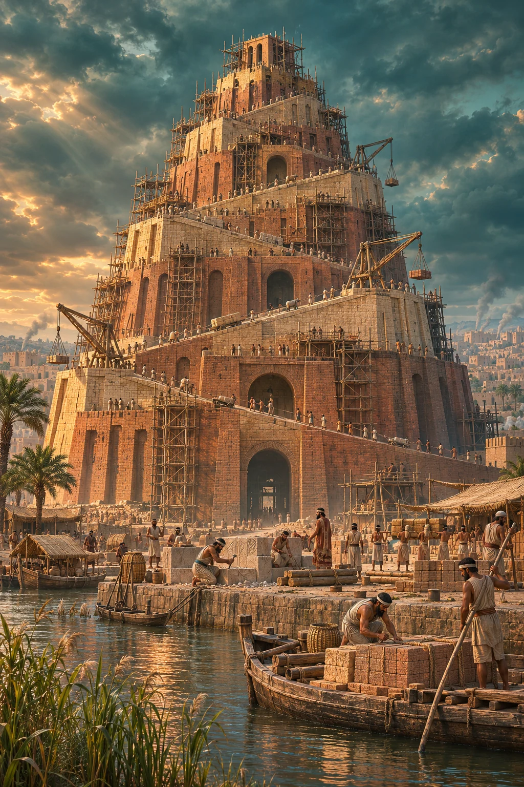

Фракции Вавилона строят общую башню и развивают собственные районы и предприятия. Игроки делят ограниченные ресурсы, договариваются через послов и меняют роли, когда город сталкивается с паводком и смешением языков.
Проектный материал для подготовки презентации заказчику · 18 ноября 2026

Иллюстрация из игрового прототипа
Vision и образовательная задача
Заказчику нужна симуляция, которая поможет студентам понять свои сильные стороны и выбрать, какие навыки развивать дальше. Игра даёт попробовать непривычные роли в ситуациях, где ставки понятны, ресурсов на все задачи не хватает, а договорённости приходится пересобирать по мере изменения обстоятельств.
Игрок сначала отвечает за одну часть командного решения, затем передаёт дела и принимает чужую роль. В финале команда сопоставляет замысел, договорённости и последствия. Предмет обратной связи — конкретный эпизод. Например, посол после отказа нашёл второго поставщика, а лидер изменил распределение, чтобы успеть к дедлайну.
Роль
Что делает
Что обсуждаем на разборе
Лидер
Помогает выбрать приоритеты, голосует, принимает и фиксирует решение о вложениях.
Как выслушал разные оценки, объяснил выбор и взял ответственность за итог.
Ресурсный менеджер
Сводит остатки, цену и сроки, предлагает альтернативные раскладки.
Как заметил дефицит, сравнил риски и учёл уже взятые обязательства.
Посол
Выясняет условия партнёров, ищет встречную выгоду и подтверждает сделки.
Как уточнял интересы, отвечал на отказ и объяснял договор своей команде.
Помощник команды
Для четвёртого участника концепции предусмотрена поддерживающая роль. Задачу он находит по ситуации.
Как заметил перегрузку или пробел в плане и помог команде продвинуться.
Благополучие фракции и готовность башни показывают последствия игровых решений. Для обратной связи о навыках нужны наблюдения и примеры от участников. Индивидуальный профиль навыков и рекомендации по курсам, книгам и программам остаются частью задания заказчика на полную версию.
Городская администрация предлагает построить башню, чтобы связать деловую жизнь города, привлечь посетителей и дать горожанам новую общественную территорию. Место стройки меняет цену компромисса. Городская площадь близка к торговле, жилой квартал затрагивает дома, руины вызывают спор о наследии, а Другой берег оставляет больше места и требует усилить фундамент.
В концепции шесть фракций с общими правилами и своими интересами. Администрация отвечает за развитие города, Архитекторы — за проект и его место, Строители — за реализуемость работ, Жители — за условия жизни, Торговцы — за снабжение и контракты. Тайный орден помогает городу на своих условиях и стремится не допустить завершения башни.
Цели полной игры
Что считается результатом
Обычные фракции
Построенная башня даёт общую победу. Достижение порога благополучия к финалу даёт командную победу. При выполнении обеих целей у команды большая победа и лучший эпилог. При провале обеих целей команда проигрывает.
Тайный орден
Для победы нужно достичь скрытой цели влияния. Если влияние набрано и башня завершена, победа обычная. Если влияние набрано и башня осталась незавершённой, победа большая. Успех либо провал башни сам по себе условие влияния не заменяет.
Благополучие показывает положение фракции на протяжении партии и проверяется в общем финале. Публичные проекты могут повысить его одним и снизить другим. Команда может заранее приблизиться к порогу, но ей ещё предстоит удержать результат. У игроков роли и ответственность внутри команды, цели принадлежат фракциям.
Рабочий ориентир балансировки полной игры — две-три команды достигают собственных целей, а башню всё ещё можно построить при согласованных усилиях. Сколько целей будет достигнуто в конкретной партии, определяют сами решения и доступные ресурсы.
На обсуждении механик мы разбирали, из чего команда составляет план, какие обязательства может взять посол и как решения прошлых циклов меняют следующую развилку. Ниже приведены согласованные правила, их реализация в «Высокой воде» и вопросы, которые остались для полной версии.
Два горизонта планирования. Древесина и камень копятся между циклами. Их можно придержать под будущий этап башни, продать или направить в производство. Рабочие действия начисляются заново в начале цикла, доступны для передачи и сгорают к его концу. Цена большой единицы задаёт, сколько бригад надо собрать одновременно. Даже крупный запас камня сам по себе такую единицу не закроет.
Специализация без монополии. В демо Строители получают за цикл 1 древесину, 2 камня и 4 рабочих действия, Торговцы — 2, 1 и 3, Жители — 1, 1 и 4, Орден — 1, 1 и 3. Все фракции получают каждый из трёх ресурсов. В одном цикле Строители могут продать камень, в другом — сами искать древесину или труд. После отказа одного партнёра можно собрать запрос у двух других. Базовое поступление действует каждый цикл. Доход от объекта начинается со следующего и в демо обычно длится два цикла.
Что сохраняется. Если у карточки две единицы по 2 древесины и 2 рабочих действия, команда может закрыть одну сейчас, вторую позже. Стоимость номинально одинакова для единиц одной карточки и различается между карточками. Например, каменоломня вовсе не требует камня. Засчитываются целые единицы, основной эффект выдаётся после завершения карточки. В демо в совместную единицу можно внести часть цены целыми ресурсами. Если сумму к закрытию цикла не набрали, вложенные ресурсы возвращаются, а возвращённые рабочие действия сгорают вместе с остальными. Продвижением остаются только оплаченные единицы.
Что задаёт карточка
У проекта независимо заданы назначение, условия участия и получатели эффекта. Личная карточка может давать благополучие или доход. Публичная может быть выгодна одному участнику и убыточна другим. Совместная может давать эффект вложившимся фракциям либо городу независимо от того, кто заплатил.
Вариант вложения в демо
Кто платит и что получает
Личный проект
Строители сами оплачивают «Артель каменщиков» камнем и трудом. Со следующего цикла дважды получают по одному рабочему действию. Материалы на проект им могут передать соседи.
Общий объект с доходом
В каменоломне каждую из двух единиц целиком оплачивает одна фракция. После завершения объекта каждая из вложившихся фракций получает по одному камню в каждом из двух следующих циклов.
Ровно два участника
«Лесной причал» и «Совместный резерв бригад» требуют ненулевого вклада двух фракций в одну единицу. Обе затем получают по единице древесины или труда соответственно, два цикла подряд. Вклад можно разделить неравномерно.
Городской или строительный проект
«Береговую переправу» и этапы башни можно оплачивать целой единицей или складывать части цены в выбранную единицу. Завершённая переправа даёт благополучие даже фракции, которая в неё не вложилась.
Одна фракция оформляет заказ
«Срочный заказ на крепёж» закрывают Торговцы, получив недостающее через передачу ресурсов. Поставщик получает оговорённый ресурс и может вложить его в свой план.
Сколько выбора нужно. При сборке пула ориентировались как минимум на три доступные карточки у фракции на входе в цикл и на два осмысленных плана с учётом ресурсов и доступных партнёров. Три открытые карточки сами по себе ещё не дают трёх реальных вариантов. Поэтому отдельно проверяем, куда игроки могут потратить оставшиеся бригады, кому продать труд и остаётся ли выбор после раннего закрытия популярных проектов. Число карточек получается из этого требования. В двух расчётных сценариях исходного пакета на входе было 4–12 открытых карточек на фракцию, из них 2–9 позволяли оплатить хотя бы одну единицу своими силами. Это ориентир на заданных сценариях. Другой порядок закрытия проектов может изменить выбор.
На повестке две вещи. Послы могут согласовать, кто и чем оплачивает общую карточку, вплоть до номера единицы. Или обменять ресурсы для разных планов, в том числе заплатить за отказ от участия в спорном проекте. Обсуждения свободные. Фракции вправе договариваться парами, искать второго партнёра и выдавать несколько предложений за цикл. Цена определяется сторонами сделки и меняется вместе со сроками и спросом.
О чём договорились
Как это проходит в демо
Древесина, камень или рабочие действия
Один посол отправляет предложение с целыми количествами в обе стороны, второй принимает или отклоняет. Можно сделать и одностороннюю передачу. После согласия исходящие ресурсы обеих сторон резервируются. Ведущий закрывает переговоры, сайт исполняет принятые передачи. Неотвеченные предложения истекают.
Компенсация за отказ
Посол выбирает открытый спорный проект и предлагает ресурсы. После согласия адресат получает компенсацию, а сайт блокирует его прямой вклад в эту карточку до конца текущего цикла. Остальные фракции вправе её оплатить. Если сделка осталась предложением, обмена и блокировки нет.
Совместный вклад
Послы называют карточку, номер единицы и долю каждого. После переговоров лидеры вносят эти доли. Сайт учитывает фактические вклады, а устная раскладка по единицам сама по себе ресурсы не резервирует. Для части проектов можно обменяться ресурсами заранее и оплатить всю единицу с одного счёта.
Обещание на будущее
Послы могут договориться вернуться к теме в следующем цикле. Такие обещания держатся на доверии и повторных переговорах. Регулярная передача труда у Ордена — отдельно оговорённое правило открытого представительства.
С чем посол выходит за стол. В концепции стартовый бриф сообщает примерный профиль запасов фракций. Точные текущие запасы и частные карточки доступны своей команде, а цифры о собственных запасах можно добровольно раскрыть. Благополучие и плюсы и минусы публичных карточек видны заранее. Это позволяет, например, Жителям прийти с конкретным предложением по грузовому двору, а Строителям оценить встречную цену с учётом своего плана. Отдельного вето у затронутой фракции нет.
Пять переговорных ситуаций, заложенных в поле проектов
Зачем говорить сейчас
Развилка для игроков
Получить помощь в конфликте
Грузовой двор даёт Строителям +2, Торговцам +3, Жителям −3. Жители могут заплатить Строителям за отказ и освободить им труд для каркаса. Торговцы могут найти замену партнёру. Набережная даёт Жителям +1 и Торговцам −2. В демо обе карточки могут завершиться в одном цикле, поэтому сама по себе набережная не возмещает всю потерю Жителей.
Купить будущий доход вместе
Причал или резерв требует двух реальных вкладов. Обоим участникам может быть выгодно вложить бригаду сейчас, если в двух следующих циклах она позволит закрыть другие карточки. Послы выясняют, кто может принять эту отсрочку и как делить цену.
Разделить цену кризиса
Защита дворов снижает риск потерь Жителей и Торговцев и избавляет стройку от удорожания. У каждой команды всё ещё есть собственный проект, ради которого она может отказаться от вклада или предложить меньшую долю.
Собрать дефицит к дедлайну
Торговцам в третьем цикле нужно 5 рабочих действий на крепёж при базовом доходе 3. Можно купить два у одного партнёра или по одному у двух. У поставщиков есть свои проекты, поэтому просьба о помощи превращается в обсуждение цены и сроков.
Договориться о башне
Одна единица каркаса требует 6 рабочих действий до модификаторов. Фракции могут сложить бригады. Каждый участник решает, сколько готов отдать в общий результат и что хочет сохранить для своей цели.
Рассмотренные варианты. В упрощённой версии Мелиссы переговоры сводились к общему голосованию за один объект цикла и распределению его цены между сторонниками. Здесь голосование используется для выбора площадки, а команды могут финансировать несколько проектов одновременно. Аукцион, исключительная лицензия, правило «кто первый закончил» и отдельное городское голосование за конфликтные карточки остались вариантами. Правило приоритета особенно важно только там, где две команды в принципе могут претендовать на один неделимый результат. Взнос ради даров богов остался шестым сюжетным наброском.
Цикл 0. Площадку выбирают до начала начислений и вложений. В демо лидер подаёт один голос от фракции, включая Орден. Для решения нужны три голоса из четырёх. Если большинства нет, проходят повторные переговоры и голосование. При втором тупике стройка уходит на Другой берег. Для стола из шести фракций рабочий вариант — четыре голоса из шести.
Изменения благополучия по порядку: Строители, Жители, Торговцы.
Площадка демо
Очки на старте
Что обсуждают
Городская площадь
0 / −2 / +1
Удобство доставки и рынка при потере общественного пространства.
Жилой квартал
+2 / −1 / −1
Удобная стройка затрагивает дома и торговые маршруты.
Старые руины
−2 / −1 / +2
Ценность нового маршрута, затраты Строителей и интерес Жителей к наследию.
Другой берег
0 / 0 / 0
Компромисс по стартовым очкам с дополнительной единицей усиления фундамента.
В демо выбор площадки сдвигает начальное благополучие и добавляет этап на Другом берегу. Влияние площадки на весь базовый доход оставалось вариантом. На тесте важно увидеть, выбирают ли компромисс после обсуждения цены или сразу ведут голосование к тупику ради страховки от потерь.
План башни открыт заранее. Четыре основных этапа полной партии — фундамент, каркас, этажи и инженерные системы. На Другом берегу между фундаментом и каркасом добавляется усиление. Окно последнего этапа открывается с началом четвёртого сезона и даёт три цикла на завершение. Ранний этап можно отложить, но следующий ждёт окончания предыдущего. Пропуск удобного момента сам по себе не убирает этап с поля.
Цены в демо. Фундамент доступен с цикла 1 и состоит из двух единиц по 2 древесины, 2 камня и 5 рабочих действий. Усиление на Другом берегу — одна единица за 1 древесину, 2 камня и 5 действий. Каркас открывается с цикла 4 и только после завершения основания, включая усиление при необходимости. Две его единицы стоят по 2 древесины, 2 камня и 6 действий до событийных поправок. Следующий этап становится доступен с нового цикла. Высокая цена труда побуждает объединять вклады, а развитая фракция может оплатить целую единицу сама, пожертвовав другими работами.
Что проверяют в финале. Обычные фракции набирают благополучие разными проектами, но сравниваются с одним открытым порогом. В демо 7 очков — ориентир полной игры. Промежуточное достижение отметки не закрепляет победу: чужой проект или кризис может отнять очки. Для полной версии хотим, чтобы командная цель становилась достижимой ближе к третьей четверти партии и оставалась под риском до финала. Балансная цель — чтобы башня и собственные цели двух-трёх фракций могли сойтись в одной партии с небольшим запасом. Когда больше команд вкладывается в свои результаты, башню должно быть труднее закончить. Это гипотеза об экономике, без формального лимита числа победителей.
Почему пока без бафов за башню. В демо этап даёт продвижение стройки. В полной партии общая победа наступает при завершении всей башни. Каждая фракция может выиграть от чужого вклада, поэтому у неё есть причина оставить свои бригады на личный проект. Агентские прогоны показали, что этим можно сильно затормозить стройку. Человеческую готовность вкладываться ради общей цели и эффект вводного брифа нужно оценить отдельно, прежде чем добавлять очки или доход за этапы.
Ведущий объявляет событие и новые карточки. Команда сверяет остатки, доход, актуальные сроки и цену работ.
Базовые поступления, доход ранее законченных проектов, эффекты кризиса и представительств.
2 минуты · подготовка
Команда определяет приоритет. Ресурсный менеджер называет недостачу, ресурсы на обмен и запасной вариант. Лидер помогает решить, с каким запросом посол выходит к партнёрам.
Команде доступен её запас и открытые карточки. Обсуждение плана идёт за столом.
5 минут · переговоры
Посол принимает новые вводные и сам подтверждает сделку. Лидер и менеджер тем временем считают варианты раскладки, в том числе при отказе партнёра.
Код посла даёт право предлагать и принимать сделки. При закрытии фазы принятые передачи исполняются.
4 минуты · вложения
Посол сообщает о результате. Команда пересчитывает план, лидер решает при разногласиях и оформляет вклады. Он распоряжается остатком с учётом заключённых сделок.
По коду лидера сайт принимает вклады по карточкам и единицам. Очки меняются при завершении карточки. На границе циклов закрываются сроки, возвращаются неполные вклады и списывается остаток труда.
Три разных вида ответственности. Посол связывает команду сделкой. Лидер выбирает и фиксирует конечную раскладку. Ресурсный менеджер ведёт расчёт и предлагает альтернативы без отдельной кнопки. Именно в промежутке подготовки и переговоров проверяется, может ли менеджер заметить ограничение и изменить решение. В составе 4×2 эту работу выполняет лидер. В полной игре четвёртый участник может помогать всем троим по ситуации, например сверять остатки и напоминать о договорённостях и сроках.
Почему посол решает сразу. Мы обсуждали два окна с возвратом к команде. Рабочая оценка составляла 3 минуты на первые предложения, минуту на обсуждение и 1,5–2 минуты на фиксацию. В первом демо выбрали одно окно. Двухитерационный вариант можно сравнить в дальнейшем, если новые вводные регулярно делают первый мандат посла непригодным для сделки.
События идут по сценарному расписанию, а их последствия зависят от действий игроков. У ведущего есть окно в начале цикла, чтобы показать актуальную ситуацию. До закрытия цикла участники действуют с этим набором вводных. План башни открыт заранее. Сюжет может намекнуть на будущий кризис, а перечень новых карточек открывается по мере развития партии. Предпочтительный способ ветвления — менять сроки, цену или доступные возможности и затем возвращать игроков к общей линии событий.
Сценарный момент
Что могут сделать игроки
Как это связано со стройкой и следующим циклом
1–2 · стройка и подвоз
Выбрать между фундаментом, переправой, производством и своими проектами. Со второго цикла можно взяться за Сухой склад.
Пропуск ранней стройки сокращает запас времени. Склад, завершённый до конца цикла 3, экономит по одной древесине на каждой из двух единиц защиты дворов.
3 · заказ на крепёж
Торговцы собирают труд в этот цикл, пока у партнёров есть объезд, подряд, причал и работы на башне. Исполненный заказ даёт +3 Торговцам и +1 Строителям.
При пропуске срока первая единица каркаса дорожает на один камень. Каркас по-прежнему можно поставить через обычное снабжение.
4 · угроза паводка
У команд есть один цикл на две единицы защиты. Параллельно открывается резерв бригад и может стать доступен каркас. Вводные заранее называют последствия пропуска.
Если защита не закончена, в цикле 5 Жители теряют 2 благополучия, Торговцы — 1, а каждая оставшаяся единица каркаса в этом цикле требует на одно рабочее действие больше.
5–6 · восстановление и конфликт
На фоне паводка открываются грузовой двор и набережная. В последнем цикле добавляются восстановление дворов, мастерские облицовки и вывозной склад.
Ветки после паводка сходятся на общей повестке при разных запасах, очках и цене каркаса. Команды решают, догонять ли башню, восстанавливать благополучие или действовать против конкурента.
Партнёры могут стать соперниками. В цикле 3 у Торговцев есть причина покупать бригады Строителей ради крепежа. Уже тогда подряд на леса выгоден Строителям и отнимает очки у Торговцев. В цикле 5 грузовой двор может снова их сблизить за счёт Жителей. В цикле 6 склад и мастерские ставят интересы прежних партнёров друг против друга. Пул даёт такую возможность. Кто фактически образовал союз и когда распался этот союз, зависит от партии.
Границы для полной версии. В обсуждении события могли сдвигать дедлайны, менять поступление ресурсов или открывать карточку ликвидации последствий. В демо действуют конкретные сроки и надбавки из таблицы. На шесть циклов закладывали один заметный общий кризис, чтобы переговоры оставались про выбор между проектами. В следующих сезонах взаимозависимость должна расти одновременно с конфликтом интересов, а события могут сделать выбранный план дороже или менее выгодным, оставив возможность его продолжить.
После третьего цикла в формате 4×3 лидер становится ресурсным менеджером, менеджер — послом, посол — лидером. В 4×2 лидер и посол меняются местами. На передачу остатков, приоритетов, договорённостей и кодов отведены три минуты. В полной партии граница сезона наступает каждые три цикла. Участник должен попробовать все три формальные роли. Для команды из четырёх рабочее ограничение — не более одного сезона в роли помощника.
Циклы
Правило за столом послов
Статус
1–3
Обычная устная речь. Послы осваивают цены, сроки и работу с предложениями.
Демо.
4–6
Речь остаётся устной. Каждая фракция использует свои названия древесины, камня и рабочих действий. Количества, проекты и условия можно произносить как обычно.
Первое усложнение демо.
7–9
Рабочий вариант — вести внешние переговоры письменно и пользоваться общим словарём.
Замысел полной версии.
10–12
Рабочий вариант — перейти к символам и числам, сохранив накопленный словарь.
Замысел полной версии.
Как послы договариваются с цикла 4. Строитель говорит «одна глыба за одну бригаду». Если партнёр не понял, можно описать назначение ресурса словами, например «то, что даёт каменоломня» или «то, что сгорает в конце цикла». Памятка доступна послу на его экране и остаётся у него. На общей доске можно записать найденное соответствие, например «глыба = тесник». Доска в начале пуста и сохраняется между переговорами. Можно прийти в следующем цикле уже с частью общего словаря.
Внутри фракции речь обычная, сделка в интерфейсе оформляется обычными ресурсами. Ведущий остаётся возле послов, при оговорке просит повторить условие, а при затруднении — описать применение ресурса. Штрафов нет. Сочетание первой ротации и словаря даёт повод понаблюдать, как новый посол перенимает связи команды и проясняет смысл предложения. Темп и удобство этого формата проверяются в живых переговорах.
Орден может предложить ресурсы как обычный партнёр, но ему выгодно превращать часть такой помощи в представительства. Цель влияния скрыта, само представительство после получения видно всем. Для демо ориентир — две разные фракции. В полной партии влияние даёт обычную победу, а влияние при незаконченной башне — большую. Без необходимого влияния Орден проигрывает при любом состоянии стройки.
Представительство — совместный проект. Соответствующую карточку видят только Орден и его потенциальный партнёр. Для завершения обе стороны должны внести ненулевой вклад в одну единицу. Партнёр получает +2 благополучия сразу, а с нового цикла отдаёт Ордену по одному рабочему действию. Условия видны до вложения. Готовое представительство в демо сохраняется до конца, а передача проводится при начислении ресурсов.
Что делает остальная команда Ордена. Менеджер планирует, какой ресурс нужен для предложения и сколько труда стоит оставить себе. Лидер выбирает между ростом собственного производства, помощью ради представительства и «Архивными изысканиями». Изыскания стоят два камня и два рабочих действия. Если этап башни остаётся незавершённым, в следующем цикле каждая его оставшаяся единица требует ещё одно рабочее действие. Изменение цены объявляется за общим столом. Так Орден влияет на стройку через ту же механику проектов, что и остальные.
Когда партнёру выгодно согласиться. В прогоне с сокращённым притоком материалов Орден помог Строителям закончить и представительство, и резерв бригад. Строители получили +2 благополучия, а резерв компенсировал передаваемый труд в двух следующих циклах демо. У Торговцев позднее представительство в пятом цикле означало только один цикл выплаты до окончания демо. Орден получил все три представительства. Для полной партии остаётся вопрос, как игроки оценят цену уступки на длинном горизонте и как доход от первого представительства повлияет на следующие переговоры.
Для полной игры открыты возможность снять представительство, добавление материальных выплат и условие победы с учётом объёма полученных ресурсов. В первом демо метрики влияния и экономики оставили раздельными.
Четыре фракции проводят одну сессию с выбором площадки, двумя сезонами и ротацией. Уменьшение состава сохраняет цикл решений и три разных интереса вокруг стройки, а также особую роль Ордена. Ведущий объявляет вводные, переключает фазы, наблюдает и собирает обратную связь. Решения за отсутствующие фракции он не принимает.
Проектный вопрос
Что смотреть в журнале и за столом
Сделки меняют игру?
Какая карточка была приоритетом до переговоров, сколько ресурсов недоставало, кого спросили, какой вклад случился после сделки. Для выкупа отказа важно, собирался ли получатель вкладываться и куда ушли освобождённые ресурсы.
Есть несколько реальных планов?
Сравнить доступные карточки с тем, что фракция могла оплатить сама или с партнёром. Если труд сгорел, проверить, была ли подходящая единица, устраивала ли цена и удалось ли найти контрагента. Общий остаток может сосуществовать с нехваткой труда у отдельной команды в нужный момент.
Общая стройка конкурирует с командными целями?
Отследить, когда появился первый вклад, от какой карточки команда ради него отказалась и что изменило решение о башне. Отделить влияние вводной, цены и технической фиксации вклада.
Посол и команда успевают?
Смотреть, был ли понятен запрос до выхода за стол и чем заняты лидер с менеджером. После ротации отдельно проверить передачу дел, применение словаря, время до подтверждения и ошибки ввода.
Что менялось после прогонов. Добавили поводы для двухстороннего вклада в будущий доход, заострили срочный дефицит и отрицательные эффекты спорных карточек. Совместные заявки привязали к номерам единиц после расхождения между устной раскладкой и счётом площадки. Отдельно испытали срез поступлений на одну древесину и один камень на весь стол за цикл при сохранении труда. Этот вариант проверялся в симуляции. На полную версию остаются баланс башни и благополучия, длинный горизонт влияния Ордена, ещё два сезона и формат развивающего разбора.
Состав. Строители, Жители, Торговцы и Орден. Основной формат — 4×3, запасной — 4×2 с совмещением функций лидера и ресурсного менеджера. Ведущий отдельно.
Масштаб. Нулевой цикл выбора площадки и шесть игровых циклов. Для выбора места нужны три голоса из четырёх. После второй попытки без большинства назначается Другой берег. В каталоге 33 карточки, включая условное усиление. Строительный рубеж — фундамент и каркас.
Финал. Ведущий показывает состояние башни, благополучие и представительства. Семь очков в интерфейсе — пробный ориентир полной игры. Для Ордена в демо согласован ориентир из двух представительств. Победные эпилоги относятся к полной версии.
Формат проведения. Сценарий рассчитан на 100 минут. 5 на бриф, 90 на площадку и игровую часть, 5 на разбор. В обычном цикле 1 минута на событие, 2 на подготовку, 5 на переговоры и 4 на вложения.
Цифровая часть. Сайт хранит общее состояние в облаке. Игроки заходят с ноутбука или телефона по коду роли. Ведущий входит через ChatGPT, выдаёт коды и переключает фазы. Сайт считает цены, передачи, вклады и итоги и показывает послам их памятки. Переговоры и наблюдение проходят за столом.
Поле включает личные, публичные и партнёрские карточки. Как сроки и цены меняются по ходу партии, описано в разделе о событиях. Вывоз товара из амбаров, третья возможность для представительства, закрывается в конце пятого цикла.
Опубликованная сборка использует базовое поступление 5 древесины, 5 камня и 14 рабочих действий на стол за цикл. Согласованный для следующей проверки вариант 4 / 4 / 14 прошёл отдельный агентский прогон. Вариант проверяли в симуляции.
В каждом прогоне восемь GPT‑6.1 Terra играли за четыре фракции в формате 4×2. У агентов были роль, видимые карточки, запасы своей команды и её интересы. Они предлагали сделки и выбирали действия. Игровой движок проверял и применял команды. Журнал позволил сверить намерение, подтверждённую сделку, фактический вклад и результат. После двух полных прогонов отдельно собрали отзывы участников.
Прогон
Что случилось
Что сделали с этим результатом
1 · циклы 0–6
16 сделок, в том числе 12 выкупов отказа. Фундамент 0/2. Послы согласовали вклады на обе единицы защиты, но заявки попадали в один общий пул. Защита осталась на 1/2.
Привязали заявки к конкретной единице. Отдельно проверили смысл выкупов. Только по одной сделке журнал подтвердил, что получатель до компенсации предлагал вклад в спорную карточку.
2 · циклы 0–6
2 ресурсные сделки. Как и в первой партии, 6 совместных вкладов исполнили по согласованным долям. Защита дворов 2/2, фундамент и усиление завершены, каркас 0/2.
Проверили защиту и новый интерфейс на движке. Во втором брифе стройку сделали более явной целью, поэтому её рост нельзя объяснить одной механикой. Отдельно воспроизвели закупку недостающего труда у двух поставщиков.
3 · циклы 2–5
При притоке 4 / 4 / 14 прошло 8 сделок, включая два выкупа отказа. Торговцы купили за камень два рабочих действия и закрыли крепёж. Без сделки им не хватало одного действия. Орден получил 3 представительства, фундамент остался на 0/2.
Повторили ход без ключевой сделки. Проверили и другой путь к заказу — по одному рабочему действию от Жителей и Ордена вместо поставки Строителей. Этого хватило для проверки содержательной сделки. Баланс башни и цена позднего представительства требуют отдельного теста.
Пример проверяемого результата. В третьем прогоне Орден помог Строителям закрыть представительство и резерв бригад. Резерв вернул Строителям тот труд, который они отдавали Ордену в двух следующих циклах демо. Это конкретная причина принять сделку и вопрос для полной версии — сохранится ли этот выбор на более длинном горизонте.
Как использовать метод в полной версии
Выбрать один вопрос к механике. Например, закрывается ли заказ при отказе первого поставщика или какой вклад меняет решение по башне.
Запустить варианты из одинакового состояния с одинаковым брифом. Менять один параметр за раз, если задача — определить его эффект.
Разобрать предложения, отказы, оплаченные единицы и изменение плана. Воспроизвести важные альтернативы через движок. Отдельно записать, где мешали баланс, правила или интерфейс.
Вынести в живой плейтест вопросы о темпе, устных переговорах, смене ролей и обратной связи. Агентские прогоны шли без живого таймера и языкового ограничения за столом.
Сценарий. Собрать проекты и события ещё двух сезонов, завершить мотивации всех шести фракций, проверить сроки башни и написать эпилоги.
Баланс. Проверить, начинают ли команды строить достаточно рано, сохраняется ли выбор между башней и благополучием, даёт ли Орден партнёрам реальные альтернативы и сколько стоит влияние на длинной дистанции.
Наблюдение. Сверить с заказчиком набор навыков, формат итоговой обратной связи и правила работы с наблюдениями. Провести живую проверку тайминга и посольского словаря. Бриф предполагает полную игру на 2–3 часа и масштабирование до 10–100 участников. Для этого нужно отдельно проверить организацию нескольких столов.
Логика будущей презентации
Начать с задачи студента и непривычной роли. Показать дилемму одного цикла на примере крепежа или паводка. Затем продемонстрировать экран посла после ротации и поле общей башни. Завершить одним проверенным эпизодом из журнала и вопросами к заказчику о полном формате и развивающей обратной связи.